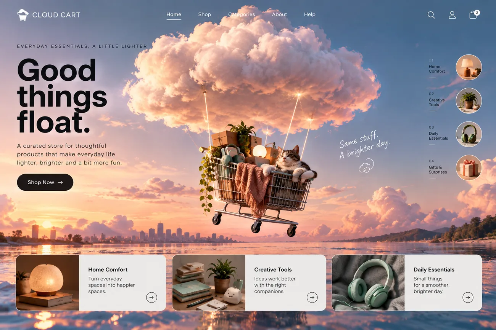
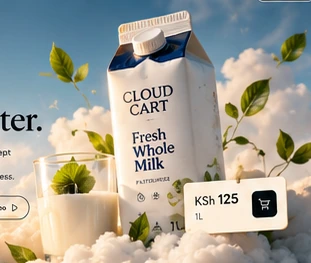

Cloud Cart.
Everyday essentials, a little lighter.
Make room
for the
everyday.
Milk, groceries, homeware and things you use, staged on clouds without losing what they are.
Open the sample store ↗
Behind the idea.
Cloud Cart is a curated, direct-to-customer grocery and home store. Its original idea pictured a shopping trolley suspended below a giant cloud. The refined product direction turns that metaphor into shoppable product staging.
Designed with intent.
A real carton of milk should remain unmistakably milk. The cloud is the art direction, not a replacement for the product. Prices, quantities and category navigation stay readable, grounded and useful.

See the whole picture.
Believable goods. Unlikely shelves.
The updated retail prototype uses distinct food and home categories, shoppable product cards, Kenyan-shilling sample prices and a working basket. These are illustrative concepts and example prices, not photographs of actual stocked inventory.

Beyond the still.
Products can be searched, filtered and added to a working demo basket; checkout is intentionally simulated.
Some interactive features may work best when you open the standalone experience.